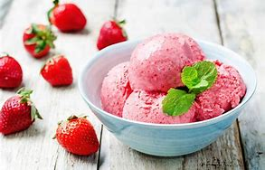

Helado de Fresa

Ingredientes:
- 2 tazas de fresas frescas, lavadas y sin tallos
- 1 taza de crema de leche
- 1/2 taza de leche entera
- 1/2 taza de azúcar
- 1 cucharadita de jugo de limón
Preparación:
- En una licuadora, mezcla las fresas, la crema de leche, la leche entera, el azúcar y el jugo de limón hasta que quede suave.
- Vierte la mezcla en una máquina para hacer helados y sigue las instrucciones del fabricante.
- Una vez que el helado esté listo, transfiérelo a un recipiente hermético y congélalo durante al menos 4 horas antes de servir.
- Sirve y disfruta tu delicioso helado de fresa.